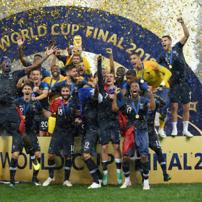
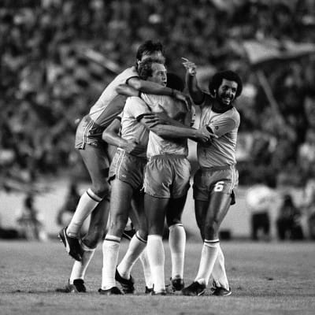
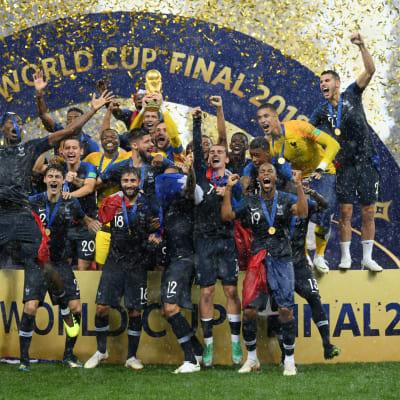
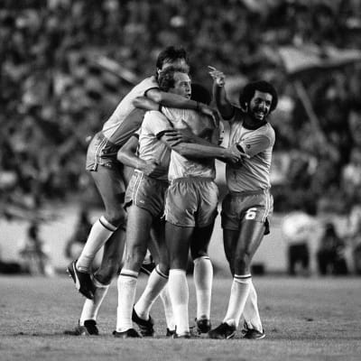

MUNDIAL 1930 -URUGUAY- En el año 1930 se disputó el primer Mundial de fútbol de la historia, que tuvo como sede Uruguay, que además sería el primer campeón del mundo de la historia, tras imponerse en la final a Argentina (4-2) en el estadio Centenario de Montevideo.
MUNDIAL 1934 -ITALIA- Italia, como hiciera cuatro años antes Uruguay, también sería campeón al organizar el Mundial, en este caso el segundo de la historia. "La Nazionale" venció a Checoslovaquia (2-1) con un gol de Angelo Schiavio en la prórroga.
MUNDIAL 1942 y 1946 -NO SE DISPUTO- Italia, como hiciera cuatro años antes Uruguay, también sería campeón al organizar el Mundial, en este caso el segundo de la historia. "La Nazionale" venció a Checoslovaquia (2-1) con un gol de Angelo Schiavio en la prórroga.
MUNDIAL 1950 -BRASIL- El Mundial disputado en Brasil, en el año 1950, dejó uno de los recuerdos más memorables de la historia de los Mundiales. Uruguay lograría su segundo galardón al imponerse a la Canarinha (2-1) en la final disputada en el estadio de Maracaná. El llamado 'Maracanazo' todavía sigue siendo recordado por todos los aficionados al fútbol
 


